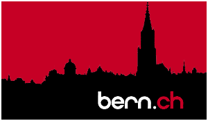
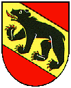

The official website of the Swiss capital
and Berne region

Wenn Sie Fragen haben bitte ein E-Mail
Wirtschaftsstandort Bern

Wirtschaftliche Schwerpunkte
Bundesstadt
Tourismus/Kongresse
Sprechstunde mit dem Stadtpräsidenten (deactivated / external link)
Signete bern.ch